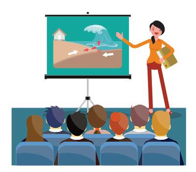
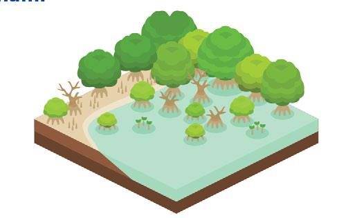
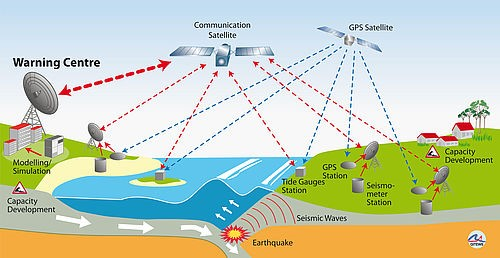
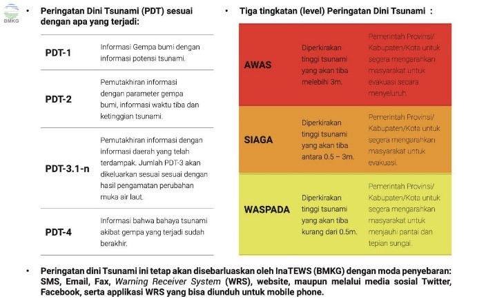

Tindakan Sebelum Bencana*

Melakukan penyuluhan tentang tsunami serta cara-cara penyelamatan diri terhadap bahaya tsunami.

Melakukan pembangunan tempat evakuasi pada daerah setempat serta penanaman mangrove serta tanaman lainnya yang dapat meredam gaya air tsunami di sepanjang garis pantai.

Melakukan pembangunan sistem peringatan dini tsunami (Tsunami Warning System).

Memahami tiga kategori status peringatan dini yaitu:
Awas = Tinggi tsunami diperkirakan >3 m
Siaga = Tinggi tsunami berada pada kisaran 0,5 m - 3 m
Waspada = Tinggi tsunami
< 0,5 m.